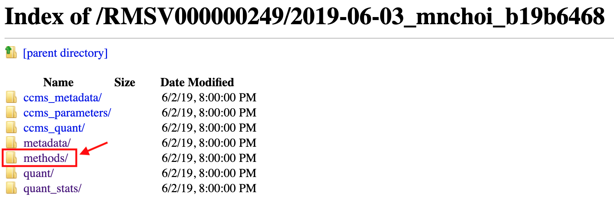

All the submitted files in the reanalysis are available for downloading from FTP.
Click FTP Download button.

It browses the FTP. Each folder is for a category. Let's go to quant/ folder, which means the Quantification Results category.

Then, you can see all the files under the Quantification Results category.

Click the file named Choi2017_DDA_Skyline_input.csv. Then this file will be downloaded on your computer.
Let's go one page back and then go to methods/ folder, which means Methods and Protocol category.

Then, you can see all the files under the Methods and Protocol category. There are Rscript used for statistical analysis, pdf including the data analysis steps, log file recorded the version of MSstats and parameters. If you download R script and other files in Quantification Results, you can reproduce the same statistical result.